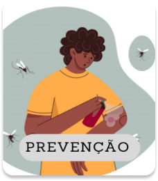

A limpeza não se restringe só às residências. É importante ficar atento a possíveis focos de água parada na escola, no trabalho e em outros locais frequentados diariamente.

Prevenção
- Eliminação de Criadouros
- Uso de Inseticidas
- Proteção Pessoal
- Monitoramento de Sintomas
- Educação Comunitária
Sintomas
- Febre Alta
- Dor de Cabeça
- Dor Muscular e nas Articulações
- Erupção Cutânea
- Cuidado com Sinais de Alerta
Os primeiros sintomas começam, em média, cinco dias após a picada do mosquito transmissor do vírus da dengue, o Aedes aegypti.
Os cuidados não se limitam apenas ao tratamento. É fundamental manter a hidratação, repousar e observar sinais de alerta em qualquer lugar onde você esteja durante a recuperação da dengue.
Cuidados Básicos
- Manter Hidratação
- Repousar Adequadamente
- Monitorar Sintomas
- Consultar um Médico
- Seguir Orientações Médicas